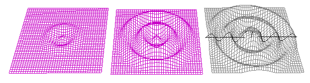
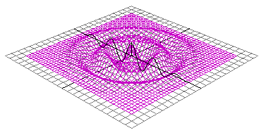
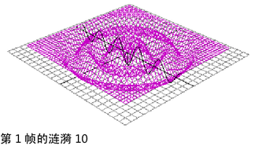
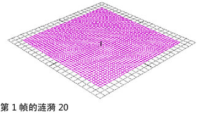

涟漪动画
通过在 NURBS 上或多边形曲面上使用波浪变形器，可以创建涟漪效果。该示例显示了如何在 NURBS 平面上创建简单的涟漪效果。

创建 NURBS 平面
- 若要创建 NURBS 平面，除了将“宽度”(Width)设置为 20，将“U 面片”(U Patches)设置为 40，以及将“V 面片”(V Patches)设置为 40 以外，使用默认创建选项。
创建波浪变形器
- 选中平面后，使用以下创建选项为平面创建波浪变形器：
- 最小半径(Min Radius)：0
- 最大半径(Max Radius)：1
- 振幅(Amplitude)：0.2
- 波长(Wavelength)：0.4
- 衰减(Dropoff)：1
- 偏移(Offset)：0
结果如下：

接下来，您将在第 1、10 和 20 帧处设定关键帧。
在第 1 帧处设定关键帧涟漪
- 在“时间滑块”(Time Slider)中，选择第 1 帧。
- 在“通道盒”(Channel Box)中，设置 wave1 的属性，如下所示：
- 为所有 wave1 的属性设定关键帧。
第 10 帧处设定关键帧涟漪
- 在“时间滑块”(Time Slider)中，选择第 10 帧。
- 在“通道盒”(Channel Box)中，设置 wave1 的属性，如下所示：
- 振幅(Amplitude)：-0.2（负值允许降低第一个子波）
- 衰减位置(Dropoff Position)：0.5
- 最大半径(Max Radius)：1
结果如下所示：

- 为所有 wave1 的属性设定关键帧。
第 20 帧处设定关键帧涟漪
- 在“时间滑块”(Time Slider)中，选择第 20 帧。
- 在“通道盒”(Channel Box)中，设置 wave1 的属性，如下所示：
- 最小半径(Min Radius)：1
- 振幅(Amplitude)：-0.1
结果如下所示：

- 为所有 wave1 的属性设定关键帧。
查看涟漪
- 拖动或播放动画。
- 可以通过继续调整波浪变形器的属性创建更加错综复杂的涟漪效果。也可以将其他波浪或正弦变形器应用到平面以获得更复杂的结果。
提示： 可以编写驱使波浪衰减的表达式，而不是为
“衰减位置”(Dropoff Position)属性设置动画。该表达式如下所示：
wave1.offset = wave1.wavelength * .25;